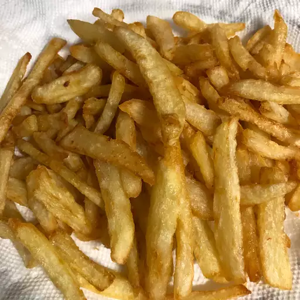

Odin Recipes

Fries
Description
Begin by soaking the sliced potato strips in a bowl of water for about 30 minutes to draw out the starch — this
ensures
the most deliciously crispy results. Pat potatoes dry, then add them to a pot of preheated oil and fry for five
minutes.
Allow the potatoes to cool before frying them a second time. Let cook until golden brown, then blot with a paper
towel
and salt before serving. Double-frying guarantees a wonderful crunch that will keep you coming back for more.
Ingredients
- 1 large russet potato, cut into evenly sized strips
- 2 cups vegetable oil for frying, or as needed
- salt to taste
Steps
- Soak potato strips in a large bowl of water for about 30 minutes.
- Pat with paper towels until thoroughly dry.
- Heat oil in a deep-fryer or large saucepan to 275 degrees F (135 degrees C). Gently add potatoes to the hot
oil and fry
for about 5 minutes, stirring and flipping the potatoes occasionally.
- Use a slotted spoon to transfer potatoes to a paper towel-lined plate. Let cool completely.
- Heat oil again, but this time to 350 degrees F (175 degrees C). Add potatoes and fry a second time until
golden brown, 5
to 6 minutes.
- Remove from the deep-fryer and blot with a paper towel. Sprinkle with salt to serve.
- Enjoy!